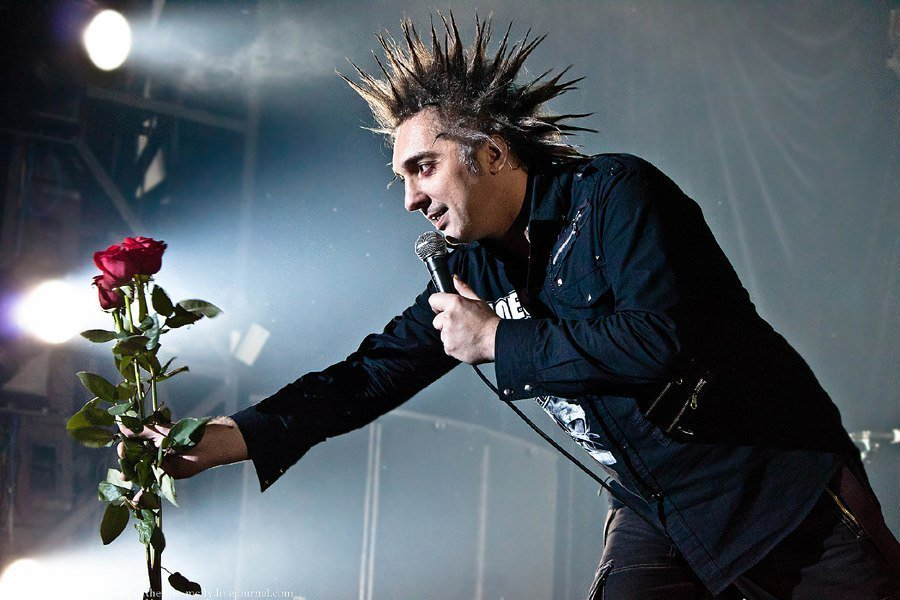
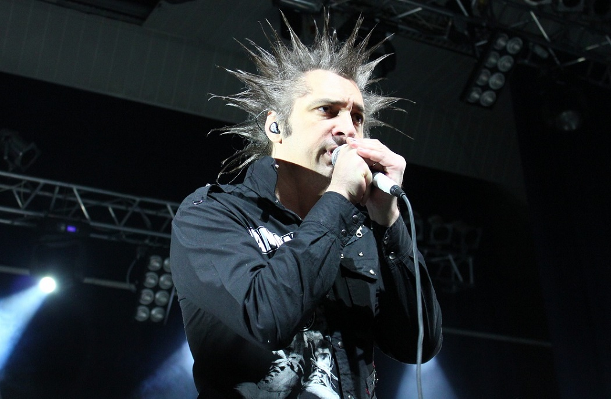
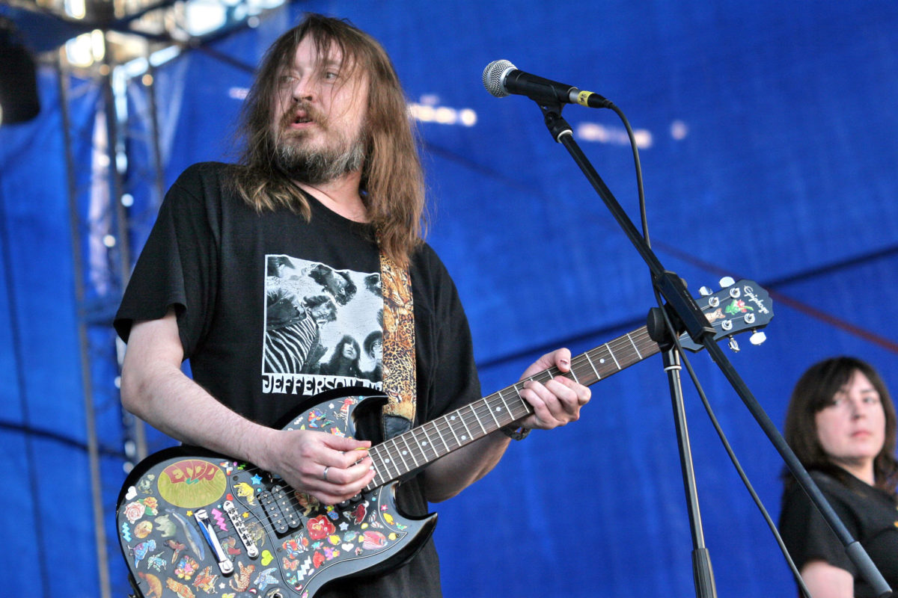
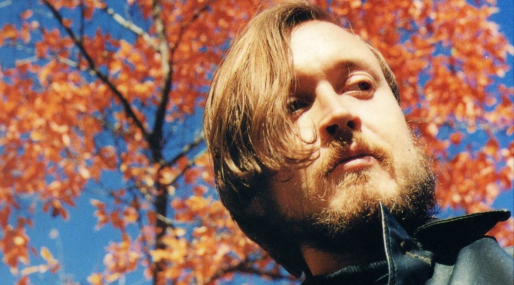

Михаил Юрьевич Горешенёв
Известный российский рок-музыкант, вокалист и один из основателей группы «Король и Шут».
Михаил Юрьевич Горшенев («Горшок») родился 7 августа 1973 года в Ленинградской области в семье военного врача, из-за чего был вынужден вместе с родителями часто переезжать с места на место.
Заниматься музыкой начал еще в школе, основав вместе с одноклассниками группу «Контора», которую позднее, после появления второго вокалиста Андрея «Князя» Князева, переименовали в «Король шутов». Знакомство с Князем произошло в Реставрационном училище, откуда Горшенева отчислили за неуспеваемость. Дело в том, что музыка интересовала его больше, чем учеба.
К этому времени у Горшка уже не было передних зубов. В детстве он поспорил, что сможет удержаться зубами за турникет, и не удержался, а остальные выбил в дворовых драках. Это на долгие годы стало частью его имиджа.
Уже тогда творчество Горшка отличали песни на сказочные сюжеты, что заставтло вновь переименовать группу в более многозначительное «Король и шут».
 Сид Вишес
Сид Вишес - басс-гитарист одной из самых недолговременных, но легендарных групп от панк-рока - Sex Pistols. Истинный гуру панк-рок философии No Future (в переводе на русский "Нет будущего"), публично заявивший, что не доживет до 25 лет, и это его сознательный путь...
После того, как в январе 1977 года бас-гитарист Sex Pistols Глен Мэтлок вынужден был уйти, его место предложили Вишесу, слабо владевшему инструментом, но обладавшему имиджем идеального панка. Тот искренне пытался овладеть инструментом, но его игра была неровной и слабой. В частности, Стив Джонс считал, что Сид играть так и не научился. Того же мнения придерживался Лемми, у которого Сид брал уроки На концертах зачастую приходилось отключать его бас-гитару от усилителей, чтобы он не сбивал с толку других музыкантов (в студии Вишес не играл). Концертный дебют Сида в группе состоялся 3 апреля 1977 года в лондонском клубе Screen on the Green. Это выступление было заснято на плёнку Доном Леттсом; запись была включена в фильм «Punk Rock Movie».
Попав в состав Sex Pistols почти случайно, Сид Вишес оказался в лучах скандальной славы группы и тут же стал её самым ярким персонажем. Прессу особенно привлекал имидж и манеры Вишеса, полюбившего позировать и давать интервью, оттого в восприятии широкой публики Вишес, даже более чем Роттен и остальные участники коллектива, стал олицетворением панка, хотя собственно в творчество Sex Pistols он вложил немного (одна написанная песня и несколько перепевок чужих). Между тем, именно Сид придумал знаменитый «танец» пого. «Я ненавидел Контингент Бромли и вот придумал способ погонять их по этому
Егор Летов
Егор Летов — советский и российский поэт, музыкант, а также звукорежиссёр, художник-оформитель и коллажист; основатель, лидер и единственный постоянный участник группы «Гражданская оборона», также известен по музыкальным проектам «Егор и Опизденевшие», «Коммунизм» и другим. Младший брат джазового музыканта Сергея Летова.
Егор Летов называется музыкальной легендой и одной из ключевых фигур сибирского андеграунда. Посмертно Летов был неоднократно назван «крёстным отцом», «патриархом» русского панк-рока и одним из самых влиятельных представителей панк-движения в России.
«Гражданская оборона» становится популярной за пределами Сибири. В конце 1985 года с группой началась борьба со стороны властей, в отношении Егора Летова и его группы осуществлялись политические репрессии. Поздней осенью 1985 Летова отправили на принудительное лечение в психбольницу. Там Летов пробыл с 8 декабря 1985 по 7 марта 1986 года[источник не указан 2176 дней. В своей биографии Летов так описывает этот период:
В 1987—1989 годах Егором Летовым и его соратниками был записан целый ряд альбомов «Гражданской обороны»: «Красный Альбом», «Хорошо!!», «Мышеловка», «Тоталитаризм», «Некрофилия», «Так закалялась сталь», «Боевой Стимул», «Всё идёт по плану», «Песни радости и счастья», «Война», «Армагеддон-Попс», «Здорово и вечно», «Русское поле экспериментов». В те же годы записывались альбомы проекта «Коммунизм» (в составе: Егор Летов, Константин Рябинов, Олег «Манагер» Судаков), началось сотрудничество Летова и Янки Дягилевой.
 